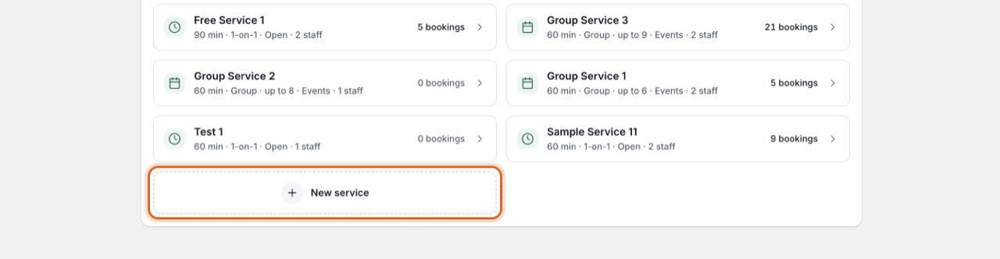
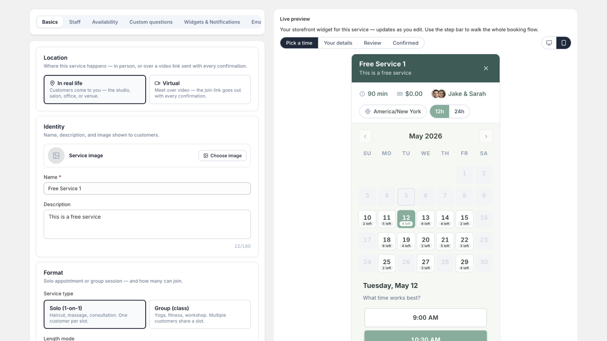

Help center ▸ Getting started
Create your first service
A service is the thing customers book — a haircut, a class, a consultation. Creating one automatically creates a matching product in your store, so it can be sold like anything else you sell.
Start a new service
Go to Services in the app’s sidebar and click New service.

The choices that matter
- Price — a paid service goes through your Shopify checkout like a normal order. You can also make a service free or pay on arrival; those book instantly without payment, and the widget tells the customer what to expect.
- Location — In real life, or Virtual. Virtual services can generate a Google Meet or Microsoft Teams link with every booking (or use a fixed link you provide) — see calendar sync.
- Format — Solo (one customer per slot) or Group with a capacity, for classes and workshops. Group slots show how many places are left.
- Staff — who performs it. Let customers pick a person, or have the app assign someone available automatically.
- Availability — Open hours offers slots from your staff’s working hours; Events runs at fixed times you define (Tuesdays at 6pm, one-off dates, and so on).
- Custom questions — anything you need to know up front. Answers arrive with the booking and in your emails.
Watch the live preview
While you edit, the right-hand pane shows the actual storefront widget for this service, updating as you type. Use the step bar at its top to walk the whole booking flow — times, details form, review — before anything is published.

Where’s the product? Saving a service
creates and publishes its product automatically, and keeps it in sync when
you rename or reprice the service. You don’t need to touch the product in
Shopify admin.
Next: put it on your storefront
With a service saved, turn the booking widget on in your theme — its product page then sells appointments instead of inventory.